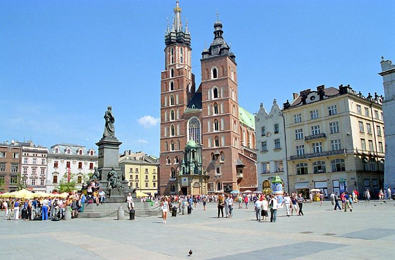

Kraków1 is the second largest and one of the oldest cities in Poland.

Situated on the Vistula River (Polish: Wisła) in the Lesser Poland region, the city dates back to the 7th century. Kraków has traditionally been one of the leading centres of Polish academic, cultural, and artistic life and is one of Poland's most important economic hubs. It was the capital of the Crown of the Kingdom of Poland from 1038 to 1569; the Polish–Lithuanian Commonwealth from 1569 to 1795; the Free City of Kraków from 1815 to 1846; the Grand Duchy of Cracow from 1846 to 1918; and Kraków Voivodeship from the 14th century to 1998. It has been the capital of Lesser Poland Voivodeship since 1999.2
Polish pronunciation: [ˈkrakuf], also Cracow or Krakow